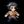

| - | Character | Speed | - | - | Score | - |
|---|---|---|---|---|---|---|
|  | Aria | 11:07.88 | 171st | 4611 | 681st | |
| Bard | 3:40.53 | 37th | 24824 | 47th | ||
| Bolt | 4:14.71 | 43rd | 16617 | 15th | ||
| Cadence | 6:16.90 | 47th | 25281 | 58th | ||
| Diamond | 5:59.02 | 98th | 3438 | 4109th | ||
| Dorian | 3:53.30 | 20th | 4398 | 137th | ||
| Dove | 3:49.18 | 109th | 556 | 643rd | ||
| Eli | 6:55.48 | 31st | 3785 | 766th | ||
| Mary | 29:26.76 | 1266th | 1529 | 2277th | ||
| Melody | 6:22.16 | 72nd | 5025 | 1908th | ||
| Monk | - | - | 3103 | 2206th | ||
| Nocturna | 8:13.62 | 67th | - | - | ||
| Tempo | 4:41.88 | 27th | 23713 | 14th | ||
| Coda | 16:51.42 | 42nd | 4444 | 31st | ||
| Story | 1:14:43.69 | 221st | 16689 | 292nd | ||
| 9char | - | - | - | - | ||
| 13char | - | - | 5553 | 281st |
| - | Character | HrdSp | NRSp | RndSp | PhsSp | MysSp | - | HrdSc | NRSc | RndSc | PhsSc | MysSc | DLess |
|---|---|---|---|---|---|---|---|---|---|---|---|---|---|
| Aria | - | - | - | - | - | - | - | 364140th | - | - | - | ||
| Bard | 17:12.8879th | - | - | - | 19:53.81198th | 1353529th | - | - | - | 3112710th | - | ||
| Bolt | 9:37.8714th | - | - | - | - | 570610th | 67328th | - | 86291st | 54670th | - | ||
| Cadence | 16:28.3359th | 26:24.93520th | 17:30.28111th | 11:41.5463rd | 24:18.99157th | 6398243rd | 31681142nd | 39341594th | 4611360th | 4066273rd | - | ||
| Diamond | 17:54.6136th | - | - | 9:34.9448th | - | 2968128th | - | - | 3210135th | - | - | ||
| Dorian | 6:26.638th | 5:07.436th | - | - | - | 41866th | 199110th | - | 27950th | 74928th | - | ||
| Dove | - | - | - | 3:33.1852nd | - | - | - | - | 122216th | - | - | ||
| Eli | - | - | - | - | - | - | - | - | - | - | - | ||
| Mary | - | - | - | - | - | - | - | - | - | - | - | ||
| Melody | 19:38.1160th | - | 29:39.13260th | - | - | 4263124th | - | 3072444th | 1721470th | 2279274th | - | ||
| Monk | - | - | - | - | - | - | - | - | - | - | - | ||
| Nocturna | 13:30.4629th | - | 26:27.13234th | - | - | 9614103rd | - | 6862856th | - | - | - | ||
| Tempo | 6:44.4919th | - | 7:23.0214th | 4:59.7311th | 7:35.825th | 418442nd | - | 325430th | 134762nd | 40178th | 10-2-111th | ||
| Coda | - | - | - | - | - | - | - | - | 19185th | - | - |
Last Updated:2021/05/24 17:15